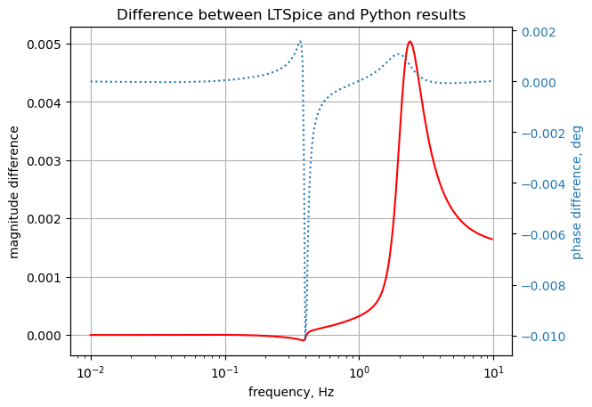

#import os
from sympy import *
import numpy as np
from tabulate import tabulate
from scipy import signal
import matplotlib.pyplot as plt
import pandas as pd
import SymMNA
from IPython.display import display, Markdown, Math, Latex
init_printing()12 Test 8
This test circuit shown in Figure 12.1 is the same circuit as Figure 11.1, for the addition of two Op Amps.
\(\large{\color {red} {\text{make a spread sheet an find the differences at s=1}}}\)

The netlist generated by LTSpice:
* test_8.asc
R1 16 8 5
R2 8 1 2
R6 2 0 5
R8 11 10 8
R10 23 22 9
R11 9 8 4
R12 2 1 2
R14 10 9 10
R15 24 23 5
V1 22 0 AC 10
V2 1 0 2
V3 10 3 3
V4 10 20 5
I1 5 0 3
I2 2 3 1
I3 16 9 2
I4 12 18 2
R7 12 5 10
R16 3 0 6
R3 26 25 10
R4 4 3 3
F1 14 7 V2 2
E1 15 21 2 7 2
H1 4 0 V2 3
G1 11 4 13 12 2
L1 16 23 1 Rser=0
L2 25 9 4 Rser=0
V5 20 28 0
V6 23 27 0
L3 22 21 2 Rser=0
L4 17 11 5 Rser=0
C1 23 18 2
C2 12 11 2
L5 0 7 1 Rser=0
L6 9 2 2 Rser=0
F2 0 27 V2 2
E2 17 26 10 9 2
H2 27 26 V2 3
G2 16 28 0 5 2
V7 24 25 0
V8 0 6 0
R9 22 16 3
R13 15 0 5
R17 19 13 5
R18 13 6 2
R19 23 19 7
R20 20 19 5
R21 19 18 3
R22 14 13 3
R23 5 4 1
R24 20 14 3
R25 23 28 10
R5 28 0 3
R26 32 31 20k
R27 30 29 10k
R28 13 30 2
R29 24 32 5
R30 29 21 20k
R31 31 8 10k
XU1 29 0 30 opamp Aol=100K GBW=10Meg
XU2 31 0 32 opamp Aol=100K GBW=10Meg
.op
K1 L1 L2 0.8
K2 L3 L4 0.2
* ;.ac list 0.159154943
.lib opamp.sub
* ;.ac dec 100 0.01 10
.backanno
.end12.1 Load the net list
net_list = '''
R1 16 8 5
R2 8 1 2
R6 2 0 5
R8 11 10 8
R10 23 22 9
R11 9 8 4
R12 2 1 2
R14 10 9 10
R15 24 23 5
V1 22 0 10
V2 1 0 2
V3 10 3 3
V4 10 20 5
I1 5 0 3
I2 2 3 1
I3 16 9 2
I4 12 18 2
R7 12 5 10
R16 3 0 6
R3 26 25 10
R4 4 3 3
F1 14 7 V2 2
E1 15 21 2 7 2
H1 4 0 V2 3
G1 11 4 13 12 2
L1 16 23 1
L2 25 9 4
V5 20 28 0
V6 23 27 0
L3 22 21 2
L4 17 11 5
C1 23 18 2
C2 12 11 2
L5 0 7 1
L6 9 2 2
F2 0 27 V2 2
E2 17 26 10 9 2
H2 27 26 V2 3
G2 16 28 0 5 2
V7 24 25 0
V8 0 6 0
R9 22 16 3
R13 15 0 5
R17 19 13 5
R18 13 6 2
R19 23 19 7
R20 20 19 5
R21 19 18 3
R22 14 13 3
R23 5 4 1
R24 20 14 3
R25 23 28 10
R5 28 0 3
R26 32 31 20e3
R27 30 29 10e3
R28 13 30 2
R29 24 32 5
R30 29 21 20e3
R31 31 8 10e3
O1 29 0 30
O2 31 0 32
K1 L1 L2 0.8
K2 L3 L4 0.2
'''12.2 Call the symbolic modified nodal analysis function
The circuit has 32 nodes and 59 branches, which results in 54 network equations. The Python code can generate these equations in about 1 second.
report, network_df, i_unk_df, A, X, Z = SymMNA.smna(net_list)Display the equations
# reform X and Z into Matrix type for printing
Xp = Matrix(X)
Zp = Matrix(Z)
temp = ''
for i in range(len(X)):
temp += '${:s}$<br>'.format(latex(Eq((A*Xp)[i:i+1][0],Zp[i])))
Markdown(temp)\(I_{V2} + v_{1} \cdot \left(\frac{1}{R_{2}} + \frac{1}{R_{12}}\right) - \frac{v_{8}}{R_{2}} - \frac{v_{2}}{R_{12}} = 0\)
\(- I_{L6} + v_{2} \cdot \left(\frac{1}{R_{6}} + \frac{1}{R_{12}}\right) - \frac{v_{1}}{R_{12}} = - I_{2}\)
\(- I_{V3} + v_{3} \cdot \left(\frac{1}{R_{4}} + \frac{1}{R_{16}}\right) - \frac{v_{4}}{R_{4}} = I_{2}\)
\(I_{H1} + g_{1} v_{12} - g_{1} v_{13} + v_{4} \cdot \left(\frac{1}{R_{4}} + \frac{1}{R_{23}}\right) - \frac{v_{3}}{R_{4}} - \frac{v_{5}}{R_{23}} = 0\)
\(v_{5} \cdot \left(\frac{1}{R_{7}} + \frac{1}{R_{23}}\right) - \frac{v_{12}}{R_{7}} - \frac{v_{4}}{R_{23}} = - I_{1}\)
\(- I_{V8} - \frac{v_{13}}{R_{18}} + \frac{v_{6}}{R_{18}} = 0\)
\(- I_{F1} - I_{L5} = 0\)
\(v_{8} \cdot \left(\frac{1}{R_{31}} + \frac{1}{R_{2}} + \frac{1}{R_{11}} + \frac{1}{R_{1}}\right) - \frac{v_{31}}{R_{31}} - \frac{v_{1}}{R_{2}} - \frac{v_{9}}{R_{11}} - \frac{v_{16}}{R_{1}} = 0\)
\(- I_{L2} + I_{L6} + v_{9} \cdot \left(\frac{1}{R_{14}} + \frac{1}{R_{11}}\right) - \frac{v_{10}}{R_{14}} - \frac{v_{8}}{R_{11}} = I_{3}\)
\(I_{V3} + I_{V4} + v_{10} \cdot \left(\frac{1}{R_{8}} + \frac{1}{R_{14}}\right) - \frac{v_{11}}{R_{8}} - \frac{v_{9}}{R_{14}} = 0\)
\(- I_{L4} + g_{1} v_{13} + v_{11} \left(C_{2} s + \frac{1}{R_{8}}\right) + v_{12} \left(- C_{2} s - g_{1}\right) - \frac{v_{10}}{R_{8}} = 0\)
\(- C_{2} s v_{11} + v_{12} \left(C_{2} s + \frac{1}{R_{7}}\right) - \frac{v_{5}}{R_{7}} = - I_{4}\)
\(v_{13} \cdot \left(\frac{1}{R_{28}} + \frac{1}{R_{22}} + \frac{1}{R_{18}} + \frac{1}{R_{17}}\right) - \frac{v_{30}}{R_{28}} - \frac{v_{14}}{R_{22}} - \frac{v_{6}}{R_{18}} - \frac{v_{19}}{R_{17}} = 0\)
\(I_{F1} + v_{14} \cdot \left(\frac{1}{R_{24}} + \frac{1}{R_{22}}\right) - \frac{v_{20}}{R_{24}} - \frac{v_{13}}{R_{22}} = 0\)
\(I_{Ea1} + \frac{v_{15}}{R_{13}} = 0\)
\(I_{L1} - g_{2} v_{5} + v_{16} \cdot \left(\frac{1}{R_{9}} + \frac{1}{R_{1}}\right) - \frac{v_{22}}{R_{9}} - \frac{v_{8}}{R_{1}} = - I_{3}\)
\(I_{Ea2} + I_{L4} = 0\)
\(- C_{1} s v_{23} + v_{18} \left(C_{1} s + \frac{1}{R_{21}}\right) - \frac{v_{19}}{R_{21}} = I_{4}\)
\(v_{19} \cdot \left(\frac{1}{R_{21}} + \frac{1}{R_{20}} + \frac{1}{R_{19}} + \frac{1}{R_{17}}\right) - \frac{v_{18}}{R_{21}} - \frac{v_{20}}{R_{20}} - \frac{v_{23}}{R_{19}} - \frac{v_{13}}{R_{17}} = 0\)
\(- I_{V4} + I_{V5} + v_{20} \cdot \left(\frac{1}{R_{24}} + \frac{1}{R_{20}}\right) - \frac{v_{14}}{R_{24}} - \frac{v_{19}}{R_{20}} = 0\)
\(- I_{Ea1} - I_{L3} + \frac{v_{21}}{R_{30}} - \frac{v_{29}}{R_{30}} = 0\)
\(I_{L3} + I_{V1} + v_{22} \cdot \left(\frac{1}{R_{9}} + \frac{1}{R_{10}}\right) - \frac{v_{16}}{R_{9}} - \frac{v_{23}}{R_{10}} = 0\)
\(- C_{1} s v_{18} - I_{L1} + I_{V6} + v_{23} \left(C_{1} s + \frac{1}{R_{25}} + \frac{1}{R_{19}} + \frac{1}{R_{15}} + \frac{1}{R_{10}}\right) - \frac{v_{28}}{R_{25}} - \frac{v_{19}}{R_{19}} - \frac{v_{24}}{R_{15}} - \frac{v_{22}}{R_{10}} = 0\)
\(I_{V7} + v_{24} \cdot \left(\frac{1}{R_{29}} + \frac{1}{R_{15}}\right) - \frac{v_{32}}{R_{29}} - \frac{v_{23}}{R_{15}} = 0\)
\(I_{L2} - I_{V7} + \frac{v_{25}}{R_{3}} - \frac{v_{26}}{R_{3}} = 0\)
\(- I_{Ea2} - I_{H2} - \frac{v_{25}}{R_{3}} + \frac{v_{26}}{R_{3}} = 0\)
\(- I_{F2} + I_{H2} - I_{V6} = 0\)
\(- I_{V5} + g_{2} v_{5} + v_{28} \cdot \left(\frac{1}{R_{5}} + \frac{1}{R_{25}}\right) - \frac{v_{23}}{R_{25}} = 0\)
\(v_{29} \cdot \left(\frac{1}{R_{30}} + \frac{1}{R_{27}}\right) - \frac{v_{21}}{R_{30}} - \frac{v_{30}}{R_{27}} = 0\)
\(I_{O1} + v_{30} \cdot \left(\frac{1}{R_{28}} + \frac{1}{R_{27}}\right) - \frac{v_{13}}{R_{28}} - \frac{v_{29}}{R_{27}} = 0\)
\(v_{31} \cdot \left(\frac{1}{R_{31}} + \frac{1}{R_{26}}\right) - \frac{v_{8}}{R_{31}} - \frac{v_{32}}{R_{26}} = 0\)
\(I_{O2} + v_{32} \cdot \left(\frac{1}{R_{29}} + \frac{1}{R_{26}}\right) - \frac{v_{24}}{R_{29}} - \frac{v_{31}}{R_{26}} = 0\)
\(v_{22} = V_{1}\)
\(v_{1} = V_{2}\)
\(v_{10} - v_{3} = V_{3}\)
\(v_{10} - v_{20} = V_{4}\)
\(v_{20} - v_{28} = V_{5}\)
\(v_{23} - v_{27} = V_{6}\)
\(v_{24} - v_{25} = V_{7}\)
\(- v_{6} = V_{8}\)
\(I_{F1} - I_{V2} f_{1} = 0\)
\(- ea_{1} v_{2} + ea_{1} v_{7} + v_{15} - v_{21} = 0\)
\(- I_{V2} h_{1} + v_{4} = 0\)
\(- I_{L1} L_{1} s - I_{L2} M_{1} s + v_{16} - v_{23} = 0\)
\(- I_{L1} M_{1} s - I_{L2} L_{2} s + v_{25} - v_{9} = 0\)
\(- I_{L3} L_{3} s - I_{L4} M_{2} s - v_{21} + v_{22} = 0\)
\(- I_{L3} M_{2} s - I_{L4} L_{4} s - v_{11} + v_{17} = 0\)
\(- I_{L5} L_{5} s - v_{7} = 0\)
\(- I_{L6} L_{6} s - v_{2} + v_{9} = 0\)
\(I_{F2} - I_{V2} f_{2} = 0\)
\(- ea_{2} v_{10} + ea_{2} v_{9} + v_{17} - v_{26} = 0\)
\(- I_{V2} h_{2} - v_{26} + v_{27} = 0\)
\(v_{29} = 0\)
\(v_{31} = 0\)
print('There are {:d} network equations for this circuit generated by MNA'.format(len(X)))There are 54 network equations for this circuit generated by MNA12.2.1 Netlist statistics
print(report)Net list report
number of lines in netlist: 63
number of branches: 59
number of nodes: 32
number of unknown currents: 22
number of RLC (passive components): 39
number of inductors: 6
number of independent voltage sources: 8
number of independent current sources: 4
number of op amps: 2
number of E - VCVS: 2
number of G - VCCS: 2
number of F - CCCS: 2
number of H - CCVS: 2
number of K - Coupled inductors: 2
12.2.2 Connectivity Matrix
A\(\displaystyle \left[\begin{array}{cccccccccccccccccccccccccccccccccccccccccccccccccccccc}\frac{1}{R_{2}} + \frac{1}{R_{12}} & - \frac{1}{R_{12}} & 0 & 0 & 0 & 0 & 0 & - \frac{1}{R_{2}} & 0 & 0 & 0 & 0 & 0 & 0 & 0 & 0 & 0 & 0 & 0 & 0 & 0 & 0 & 0 & 0 & 0 & 0 & 0 & 0 & 0 & 0 & 0 & 0 & 0 & 1 & 0 & 0 & 0 & 0 & 0 & 0 & 0 & 0 & 0 & 0 & 0 & 0 & 0 & 0 & 0 & 0 & 0 & 0 & 0 & 0\\- \frac{1}{R_{12}} & \frac{1}{R_{6}} + \frac{1}{R_{12}} & 0 & 0 & 0 & 0 & 0 & 0 & 0 & 0 & 0 & 0 & 0 & 0 & 0 & 0 & 0 & 0 & 0 & 0 & 0 & 0 & 0 & 0 & 0 & 0 & 0 & 0 & 0 & 0 & 0 & 0 & 0 & 0 & 0 & 0 & 0 & 0 & 0 & 0 & 0 & 0 & 0 & 0 & 0 & 0 & 0 & 0 & -1 & 0 & 0 & 0 & 0 & 0\\0 & 0 & \frac{1}{R_{4}} + \frac{1}{R_{16}} & - \frac{1}{R_{4}} & 0 & 0 & 0 & 0 & 0 & 0 & 0 & 0 & 0 & 0 & 0 & 0 & 0 & 0 & 0 & 0 & 0 & 0 & 0 & 0 & 0 & 0 & 0 & 0 & 0 & 0 & 0 & 0 & 0 & 0 & -1 & 0 & 0 & 0 & 0 & 0 & 0 & 0 & 0 & 0 & 0 & 0 & 0 & 0 & 0 & 0 & 0 & 0 & 0 & 0\\0 & 0 & - \frac{1}{R_{4}} & \frac{1}{R_{4}} + \frac{1}{R_{23}} & - \frac{1}{R_{23}} & 0 & 0 & 0 & 0 & 0 & 0 & g_{1} & - g_{1} & 0 & 0 & 0 & 0 & 0 & 0 & 0 & 0 & 0 & 0 & 0 & 0 & 0 & 0 & 0 & 0 & 0 & 0 & 0 & 0 & 0 & 0 & 0 & 0 & 0 & 0 & 0 & 0 & 0 & 1 & 0 & 0 & 0 & 0 & 0 & 0 & 0 & 0 & 0 & 0 & 0\\0 & 0 & 0 & - \frac{1}{R_{23}} & \frac{1}{R_{7}} + \frac{1}{R_{23}} & 0 & 0 & 0 & 0 & 0 & 0 & - \frac{1}{R_{7}} & 0 & 0 & 0 & 0 & 0 & 0 & 0 & 0 & 0 & 0 & 0 & 0 & 0 & 0 & 0 & 0 & 0 & 0 & 0 & 0 & 0 & 0 & 0 & 0 & 0 & 0 & 0 & 0 & 0 & 0 & 0 & 0 & 0 & 0 & 0 & 0 & 0 & 0 & 0 & 0 & 0 & 0\\0 & 0 & 0 & 0 & 0 & \frac{1}{R_{18}} & 0 & 0 & 0 & 0 & 0 & 0 & - \frac{1}{R_{18}} & 0 & 0 & 0 & 0 & 0 & 0 & 0 & 0 & 0 & 0 & 0 & 0 & 0 & 0 & 0 & 0 & 0 & 0 & 0 & 0 & 0 & 0 & 0 & 0 & 0 & 0 & -1 & 0 & 0 & 0 & 0 & 0 & 0 & 0 & 0 & 0 & 0 & 0 & 0 & 0 & 0\\0 & 0 & 0 & 0 & 0 & 0 & 0 & 0 & 0 & 0 & 0 & 0 & 0 & 0 & 0 & 0 & 0 & 0 & 0 & 0 & 0 & 0 & 0 & 0 & 0 & 0 & 0 & 0 & 0 & 0 & 0 & 0 & 0 & 0 & 0 & 0 & 0 & 0 & 0 & 0 & -1 & 0 & 0 & 0 & 0 & 0 & 0 & -1 & 0 & 0 & 0 & 0 & 0 & 0\\- \frac{1}{R_{2}} & 0 & 0 & 0 & 0 & 0 & 0 & \frac{1}{R_{31}} + \frac{1}{R_{2}} + \frac{1}{R_{11}} + \frac{1}{R_{1}} & - \frac{1}{R_{11}} & 0 & 0 & 0 & 0 & 0 & 0 & - \frac{1}{R_{1}} & 0 & 0 & 0 & 0 & 0 & 0 & 0 & 0 & 0 & 0 & 0 & 0 & 0 & 0 & - \frac{1}{R_{31}} & 0 & 0 & 0 & 0 & 0 & 0 & 0 & 0 & 0 & 0 & 0 & 0 & 0 & 0 & 0 & 0 & 0 & 0 & 0 & 0 & 0 & 0 & 0\\0 & 0 & 0 & 0 & 0 & 0 & 0 & - \frac{1}{R_{11}} & \frac{1}{R_{14}} + \frac{1}{R_{11}} & - \frac{1}{R_{14}} & 0 & 0 & 0 & 0 & 0 & 0 & 0 & 0 & 0 & 0 & 0 & 0 & 0 & 0 & 0 & 0 & 0 & 0 & 0 & 0 & 0 & 0 & 0 & 0 & 0 & 0 & 0 & 0 & 0 & 0 & 0 & 0 & 0 & 0 & -1 & 0 & 0 & 0 & 1 & 0 & 0 & 0 & 0 & 0\\0 & 0 & 0 & 0 & 0 & 0 & 0 & 0 & - \frac{1}{R_{14}} & \frac{1}{R_{8}} + \frac{1}{R_{14}} & - \frac{1}{R_{8}} & 0 & 0 & 0 & 0 & 0 & 0 & 0 & 0 & 0 & 0 & 0 & 0 & 0 & 0 & 0 & 0 & 0 & 0 & 0 & 0 & 0 & 0 & 0 & 1 & 1 & 0 & 0 & 0 & 0 & 0 & 0 & 0 & 0 & 0 & 0 & 0 & 0 & 0 & 0 & 0 & 0 & 0 & 0\\0 & 0 & 0 & 0 & 0 & 0 & 0 & 0 & 0 & - \frac{1}{R_{8}} & C_{2} s + \frac{1}{R_{8}} & - C_{2} s - g_{1} & g_{1} & 0 & 0 & 0 & 0 & 0 & 0 & 0 & 0 & 0 & 0 & 0 & 0 & 0 & 0 & 0 & 0 & 0 & 0 & 0 & 0 & 0 & 0 & 0 & 0 & 0 & 0 & 0 & 0 & 0 & 0 & 0 & 0 & 0 & -1 & 0 & 0 & 0 & 0 & 0 & 0 & 0\\0 & 0 & 0 & 0 & - \frac{1}{R_{7}} & 0 & 0 & 0 & 0 & 0 & - C_{2} s & C_{2} s + \frac{1}{R_{7}} & 0 & 0 & 0 & 0 & 0 & 0 & 0 & 0 & 0 & 0 & 0 & 0 & 0 & 0 & 0 & 0 & 0 & 0 & 0 & 0 & 0 & 0 & 0 & 0 & 0 & 0 & 0 & 0 & 0 & 0 & 0 & 0 & 0 & 0 & 0 & 0 & 0 & 0 & 0 & 0 & 0 & 0\\0 & 0 & 0 & 0 & 0 & - \frac{1}{R_{18}} & 0 & 0 & 0 & 0 & 0 & 0 & \frac{1}{R_{28}} + \frac{1}{R_{22}} + \frac{1}{R_{18}} + \frac{1}{R_{17}} & - \frac{1}{R_{22}} & 0 & 0 & 0 & 0 & - \frac{1}{R_{17}} & 0 & 0 & 0 & 0 & 0 & 0 & 0 & 0 & 0 & 0 & - \frac{1}{R_{28}} & 0 & 0 & 0 & 0 & 0 & 0 & 0 & 0 & 0 & 0 & 0 & 0 & 0 & 0 & 0 & 0 & 0 & 0 & 0 & 0 & 0 & 0 & 0 & 0\\0 & 0 & 0 & 0 & 0 & 0 & 0 & 0 & 0 & 0 & 0 & 0 & - \frac{1}{R_{22}} & \frac{1}{R_{24}} + \frac{1}{R_{22}} & 0 & 0 & 0 & 0 & 0 & - \frac{1}{R_{24}} & 0 & 0 & 0 & 0 & 0 & 0 & 0 & 0 & 0 & 0 & 0 & 0 & 0 & 0 & 0 & 0 & 0 & 0 & 0 & 0 & 1 & 0 & 0 & 0 & 0 & 0 & 0 & 0 & 0 & 0 & 0 & 0 & 0 & 0\\0 & 0 & 0 & 0 & 0 & 0 & 0 & 0 & 0 & 0 & 0 & 0 & 0 & 0 & \frac{1}{R_{13}} & 0 & 0 & 0 & 0 & 0 & 0 & 0 & 0 & 0 & 0 & 0 & 0 & 0 & 0 & 0 & 0 & 0 & 0 & 0 & 0 & 0 & 0 & 0 & 0 & 0 & 0 & 1 & 0 & 0 & 0 & 0 & 0 & 0 & 0 & 0 & 0 & 0 & 0 & 0\\0 & 0 & 0 & 0 & - g_{2} & 0 & 0 & - \frac{1}{R_{1}} & 0 & 0 & 0 & 0 & 0 & 0 & 0 & \frac{1}{R_{9}} + \frac{1}{R_{1}} & 0 & 0 & 0 & 0 & 0 & - \frac{1}{R_{9}} & 0 & 0 & 0 & 0 & 0 & 0 & 0 & 0 & 0 & 0 & 0 & 0 & 0 & 0 & 0 & 0 & 0 & 0 & 0 & 0 & 0 & 1 & 0 & 0 & 0 & 0 & 0 & 0 & 0 & 0 & 0 & 0\\0 & 0 & 0 & 0 & 0 & 0 & 0 & 0 & 0 & 0 & 0 & 0 & 0 & 0 & 0 & 0 & 0 & 0 & 0 & 0 & 0 & 0 & 0 & 0 & 0 & 0 & 0 & 0 & 0 & 0 & 0 & 0 & 0 & 0 & 0 & 0 & 0 & 0 & 0 & 0 & 0 & 0 & 0 & 0 & 0 & 0 & 1 & 0 & 0 & 0 & 1 & 0 & 0 & 0\\0 & 0 & 0 & 0 & 0 & 0 & 0 & 0 & 0 & 0 & 0 & 0 & 0 & 0 & 0 & 0 & 0 & C_{1} s + \frac{1}{R_{21}} & - \frac{1}{R_{21}} & 0 & 0 & 0 & - C_{1} s & 0 & 0 & 0 & 0 & 0 & 0 & 0 & 0 & 0 & 0 & 0 & 0 & 0 & 0 & 0 & 0 & 0 & 0 & 0 & 0 & 0 & 0 & 0 & 0 & 0 & 0 & 0 & 0 & 0 & 0 & 0\\0 & 0 & 0 & 0 & 0 & 0 & 0 & 0 & 0 & 0 & 0 & 0 & - \frac{1}{R_{17}} & 0 & 0 & 0 & 0 & - \frac{1}{R_{21}} & \frac{1}{R_{21}} + \frac{1}{R_{20}} + \frac{1}{R_{19}} + \frac{1}{R_{17}} & - \frac{1}{R_{20}} & 0 & 0 & - \frac{1}{R_{19}} & 0 & 0 & 0 & 0 & 0 & 0 & 0 & 0 & 0 & 0 & 0 & 0 & 0 & 0 & 0 & 0 & 0 & 0 & 0 & 0 & 0 & 0 & 0 & 0 & 0 & 0 & 0 & 0 & 0 & 0 & 0\\0 & 0 & 0 & 0 & 0 & 0 & 0 & 0 & 0 & 0 & 0 & 0 & 0 & - \frac{1}{R_{24}} & 0 & 0 & 0 & 0 & - \frac{1}{R_{20}} & \frac{1}{R_{24}} + \frac{1}{R_{20}} & 0 & 0 & 0 & 0 & 0 & 0 & 0 & 0 & 0 & 0 & 0 & 0 & 0 & 0 & 0 & -1 & 1 & 0 & 0 & 0 & 0 & 0 & 0 & 0 & 0 & 0 & 0 & 0 & 0 & 0 & 0 & 0 & 0 & 0\\0 & 0 & 0 & 0 & 0 & 0 & 0 & 0 & 0 & 0 & 0 & 0 & 0 & 0 & 0 & 0 & 0 & 0 & 0 & 0 & \frac{1}{R_{30}} & 0 & 0 & 0 & 0 & 0 & 0 & 0 & - \frac{1}{R_{30}} & 0 & 0 & 0 & 0 & 0 & 0 & 0 & 0 & 0 & 0 & 0 & 0 & -1 & 0 & 0 & 0 & -1 & 0 & 0 & 0 & 0 & 0 & 0 & 0 & 0\\0 & 0 & 0 & 0 & 0 & 0 & 0 & 0 & 0 & 0 & 0 & 0 & 0 & 0 & 0 & - \frac{1}{R_{9}} & 0 & 0 & 0 & 0 & 0 & \frac{1}{R_{9}} + \frac{1}{R_{10}} & - \frac{1}{R_{10}} & 0 & 0 & 0 & 0 & 0 & 0 & 0 & 0 & 0 & 1 & 0 & 0 & 0 & 0 & 0 & 0 & 0 & 0 & 0 & 0 & 0 & 0 & 1 & 0 & 0 & 0 & 0 & 0 & 0 & 0 & 0\\0 & 0 & 0 & 0 & 0 & 0 & 0 & 0 & 0 & 0 & 0 & 0 & 0 & 0 & 0 & 0 & 0 & - C_{1} s & - \frac{1}{R_{19}} & 0 & 0 & - \frac{1}{R_{10}} & C_{1} s + \frac{1}{R_{25}} + \frac{1}{R_{19}} + \frac{1}{R_{15}} + \frac{1}{R_{10}} & - \frac{1}{R_{15}} & 0 & 0 & 0 & - \frac{1}{R_{25}} & 0 & 0 & 0 & 0 & 0 & 0 & 0 & 0 & 0 & 1 & 0 & 0 & 0 & 0 & 0 & -1 & 0 & 0 & 0 & 0 & 0 & 0 & 0 & 0 & 0 & 0\\0 & 0 & 0 & 0 & 0 & 0 & 0 & 0 & 0 & 0 & 0 & 0 & 0 & 0 & 0 & 0 & 0 & 0 & 0 & 0 & 0 & 0 & - \frac{1}{R_{15}} & \frac{1}{R_{29}} + \frac{1}{R_{15}} & 0 & 0 & 0 & 0 & 0 & 0 & 0 & - \frac{1}{R_{29}} & 0 & 0 & 0 & 0 & 0 & 0 & 1 & 0 & 0 & 0 & 0 & 0 & 0 & 0 & 0 & 0 & 0 & 0 & 0 & 0 & 0 & 0\\0 & 0 & 0 & 0 & 0 & 0 & 0 & 0 & 0 & 0 & 0 & 0 & 0 & 0 & 0 & 0 & 0 & 0 & 0 & 0 & 0 & 0 & 0 & 0 & \frac{1}{R_{3}} & - \frac{1}{R_{3}} & 0 & 0 & 0 & 0 & 0 & 0 & 0 & 0 & 0 & 0 & 0 & 0 & -1 & 0 & 0 & 0 & 0 & 0 & 1 & 0 & 0 & 0 & 0 & 0 & 0 & 0 & 0 & 0\\0 & 0 & 0 & 0 & 0 & 0 & 0 & 0 & 0 & 0 & 0 & 0 & 0 & 0 & 0 & 0 & 0 & 0 & 0 & 0 & 0 & 0 & 0 & 0 & - \frac{1}{R_{3}} & \frac{1}{R_{3}} & 0 & 0 & 0 & 0 & 0 & 0 & 0 & 0 & 0 & 0 & 0 & 0 & 0 & 0 & 0 & 0 & 0 & 0 & 0 & 0 & 0 & 0 & 0 & 0 & -1 & -1 & 0 & 0\\0 & 0 & 0 & 0 & 0 & 0 & 0 & 0 & 0 & 0 & 0 & 0 & 0 & 0 & 0 & 0 & 0 & 0 & 0 & 0 & 0 & 0 & 0 & 0 & 0 & 0 & 0 & 0 & 0 & 0 & 0 & 0 & 0 & 0 & 0 & 0 & 0 & -1 & 0 & 0 & 0 & 0 & 0 & 0 & 0 & 0 & 0 & 0 & 0 & -1 & 0 & 1 & 0 & 0\\0 & 0 & 0 & 0 & g_{2} & 0 & 0 & 0 & 0 & 0 & 0 & 0 & 0 & 0 & 0 & 0 & 0 & 0 & 0 & 0 & 0 & 0 & - \frac{1}{R_{25}} & 0 & 0 & 0 & 0 & \frac{1}{R_{5}} + \frac{1}{R_{25}} & 0 & 0 & 0 & 0 & 0 & 0 & 0 & 0 & -1 & 0 & 0 & 0 & 0 & 0 & 0 & 0 & 0 & 0 & 0 & 0 & 0 & 0 & 0 & 0 & 0 & 0\\0 & 0 & 0 & 0 & 0 & 0 & 0 & 0 & 0 & 0 & 0 & 0 & 0 & 0 & 0 & 0 & 0 & 0 & 0 & 0 & - \frac{1}{R_{30}} & 0 & 0 & 0 & 0 & 0 & 0 & 0 & \frac{1}{R_{30}} + \frac{1}{R_{27}} & - \frac{1}{R_{27}} & 0 & 0 & 0 & 0 & 0 & 0 & 0 & 0 & 0 & 0 & 0 & 0 & 0 & 0 & 0 & 0 & 0 & 0 & 0 & 0 & 0 & 0 & 0 & 0\\0 & 0 & 0 & 0 & 0 & 0 & 0 & 0 & 0 & 0 & 0 & 0 & - \frac{1}{R_{28}} & 0 & 0 & 0 & 0 & 0 & 0 & 0 & 0 & 0 & 0 & 0 & 0 & 0 & 0 & 0 & - \frac{1}{R_{27}} & \frac{1}{R_{28}} + \frac{1}{R_{27}} & 0 & 0 & 0 & 0 & 0 & 0 & 0 & 0 & 0 & 0 & 0 & 0 & 0 & 0 & 0 & 0 & 0 & 0 & 0 & 0 & 0 & 0 & 1 & 0\\0 & 0 & 0 & 0 & 0 & 0 & 0 & - \frac{1}{R_{31}} & 0 & 0 & 0 & 0 & 0 & 0 & 0 & 0 & 0 & 0 & 0 & 0 & 0 & 0 & 0 & 0 & 0 & 0 & 0 & 0 & 0 & 0 & \frac{1}{R_{31}} + \frac{1}{R_{26}} & - \frac{1}{R_{26}} & 0 & 0 & 0 & 0 & 0 & 0 & 0 & 0 & 0 & 0 & 0 & 0 & 0 & 0 & 0 & 0 & 0 & 0 & 0 & 0 & 0 & 0\\0 & 0 & 0 & 0 & 0 & 0 & 0 & 0 & 0 & 0 & 0 & 0 & 0 & 0 & 0 & 0 & 0 & 0 & 0 & 0 & 0 & 0 & 0 & - \frac{1}{R_{29}} & 0 & 0 & 0 & 0 & 0 & 0 & - \frac{1}{R_{26}} & \frac{1}{R_{29}} + \frac{1}{R_{26}} & 0 & 0 & 0 & 0 & 0 & 0 & 0 & 0 & 0 & 0 & 0 & 0 & 0 & 0 & 0 & 0 & 0 & 0 & 0 & 0 & 0 & 1\\0 & 0 & 0 & 0 & 0 & 0 & 0 & 0 & 0 & 0 & 0 & 0 & 0 & 0 & 0 & 0 & 0 & 0 & 0 & 0 & 0 & 1 & 0 & 0 & 0 & 0 & 0 & 0 & 0 & 0 & 0 & 0 & 0 & 0 & 0 & 0 & 0 & 0 & 0 & 0 & 0 & 0 & 0 & 0 & 0 & 0 & 0 & 0 & 0 & 0 & 0 & 0 & 0 & 0\\1 & 0 & 0 & 0 & 0 & 0 & 0 & 0 & 0 & 0 & 0 & 0 & 0 & 0 & 0 & 0 & 0 & 0 & 0 & 0 & 0 & 0 & 0 & 0 & 0 & 0 & 0 & 0 & 0 & 0 & 0 & 0 & 0 & 0 & 0 & 0 & 0 & 0 & 0 & 0 & 0 & 0 & 0 & 0 & 0 & 0 & 0 & 0 & 0 & 0 & 0 & 0 & 0 & 0\\0 & 0 & -1 & 0 & 0 & 0 & 0 & 0 & 0 & 1 & 0 & 0 & 0 & 0 & 0 & 0 & 0 & 0 & 0 & 0 & 0 & 0 & 0 & 0 & 0 & 0 & 0 & 0 & 0 & 0 & 0 & 0 & 0 & 0 & 0 & 0 & 0 & 0 & 0 & 0 & 0 & 0 & 0 & 0 & 0 & 0 & 0 & 0 & 0 & 0 & 0 & 0 & 0 & 0\\0 & 0 & 0 & 0 & 0 & 0 & 0 & 0 & 0 & 1 & 0 & 0 & 0 & 0 & 0 & 0 & 0 & 0 & 0 & -1 & 0 & 0 & 0 & 0 & 0 & 0 & 0 & 0 & 0 & 0 & 0 & 0 & 0 & 0 & 0 & 0 & 0 & 0 & 0 & 0 & 0 & 0 & 0 & 0 & 0 & 0 & 0 & 0 & 0 & 0 & 0 & 0 & 0 & 0\\0 & 0 & 0 & 0 & 0 & 0 & 0 & 0 & 0 & 0 & 0 & 0 & 0 & 0 & 0 & 0 & 0 & 0 & 0 & 1 & 0 & 0 & 0 & 0 & 0 & 0 & 0 & -1 & 0 & 0 & 0 & 0 & 0 & 0 & 0 & 0 & 0 & 0 & 0 & 0 & 0 & 0 & 0 & 0 & 0 & 0 & 0 & 0 & 0 & 0 & 0 & 0 & 0 & 0\\0 & 0 & 0 & 0 & 0 & 0 & 0 & 0 & 0 & 0 & 0 & 0 & 0 & 0 & 0 & 0 & 0 & 0 & 0 & 0 & 0 & 0 & 1 & 0 & 0 & 0 & -1 & 0 & 0 & 0 & 0 & 0 & 0 & 0 & 0 & 0 & 0 & 0 & 0 & 0 & 0 & 0 & 0 & 0 & 0 & 0 & 0 & 0 & 0 & 0 & 0 & 0 & 0 & 0\\0 & 0 & 0 & 0 & 0 & 0 & 0 & 0 & 0 & 0 & 0 & 0 & 0 & 0 & 0 & 0 & 0 & 0 & 0 & 0 & 0 & 0 & 0 & 1 & -1 & 0 & 0 & 0 & 0 & 0 & 0 & 0 & 0 & 0 & 0 & 0 & 0 & 0 & 0 & 0 & 0 & 0 & 0 & 0 & 0 & 0 & 0 & 0 & 0 & 0 & 0 & 0 & 0 & 0\\0 & 0 & 0 & 0 & 0 & -1 & 0 & 0 & 0 & 0 & 0 & 0 & 0 & 0 & 0 & 0 & 0 & 0 & 0 & 0 & 0 & 0 & 0 & 0 & 0 & 0 & 0 & 0 & 0 & 0 & 0 & 0 & 0 & 0 & 0 & 0 & 0 & 0 & 0 & 0 & 0 & 0 & 0 & 0 & 0 & 0 & 0 & 0 & 0 & 0 & 0 & 0 & 0 & 0\\0 & 0 & 0 & 0 & 0 & 0 & 0 & 0 & 0 & 0 & 0 & 0 & 0 & 0 & 0 & 0 & 0 & 0 & 0 & 0 & 0 & 0 & 0 & 0 & 0 & 0 & 0 & 0 & 0 & 0 & 0 & 0 & 0 & - f_{1} & 0 & 0 & 0 & 0 & 0 & 0 & 1 & 0 & 0 & 0 & 0 & 0 & 0 & 0 & 0 & 0 & 0 & 0 & 0 & 0\\0 & - ea_{1} & 0 & 0 & 0 & 0 & ea_{1} & 0 & 0 & 0 & 0 & 0 & 0 & 0 & 1 & 0 & 0 & 0 & 0 & 0 & -1 & 0 & 0 & 0 & 0 & 0 & 0 & 0 & 0 & 0 & 0 & 0 & 0 & 0 & 0 & 0 & 0 & 0 & 0 & 0 & 0 & 0 & 0 & 0 & 0 & 0 & 0 & 0 & 0 & 0 & 0 & 0 & 0 & 0\\0 & 0 & 0 & 1 & 0 & 0 & 0 & 0 & 0 & 0 & 0 & 0 & 0 & 0 & 0 & 0 & 0 & 0 & 0 & 0 & 0 & 0 & 0 & 0 & 0 & 0 & 0 & 0 & 0 & 0 & 0 & 0 & 0 & - h_{1} & 0 & 0 & 0 & 0 & 0 & 0 & 0 & 0 & 0 & 0 & 0 & 0 & 0 & 0 & 0 & 0 & 0 & 0 & 0 & 0\\0 & 0 & 0 & 0 & 0 & 0 & 0 & 0 & 0 & 0 & 0 & 0 & 0 & 0 & 0 & 1 & 0 & 0 & 0 & 0 & 0 & 0 & -1 & 0 & 0 & 0 & 0 & 0 & 0 & 0 & 0 & 0 & 0 & 0 & 0 & 0 & 0 & 0 & 0 & 0 & 0 & 0 & 0 & - L_{1} s & - M_{1} s & 0 & 0 & 0 & 0 & 0 & 0 & 0 & 0 & 0\\0 & 0 & 0 & 0 & 0 & 0 & 0 & 0 & -1 & 0 & 0 & 0 & 0 & 0 & 0 & 0 & 0 & 0 & 0 & 0 & 0 & 0 & 0 & 0 & 1 & 0 & 0 & 0 & 0 & 0 & 0 & 0 & 0 & 0 & 0 & 0 & 0 & 0 & 0 & 0 & 0 & 0 & 0 & - M_{1} s & - L_{2} s & 0 & 0 & 0 & 0 & 0 & 0 & 0 & 0 & 0\\0 & 0 & 0 & 0 & 0 & 0 & 0 & 0 & 0 & 0 & 0 & 0 & 0 & 0 & 0 & 0 & 0 & 0 & 0 & 0 & -1 & 1 & 0 & 0 & 0 & 0 & 0 & 0 & 0 & 0 & 0 & 0 & 0 & 0 & 0 & 0 & 0 & 0 & 0 & 0 & 0 & 0 & 0 & 0 & 0 & - L_{3} s & - M_{2} s & 0 & 0 & 0 & 0 & 0 & 0 & 0\\0 & 0 & 0 & 0 & 0 & 0 & 0 & 0 & 0 & 0 & -1 & 0 & 0 & 0 & 0 & 0 & 1 & 0 & 0 & 0 & 0 & 0 & 0 & 0 & 0 & 0 & 0 & 0 & 0 & 0 & 0 & 0 & 0 & 0 & 0 & 0 & 0 & 0 & 0 & 0 & 0 & 0 & 0 & 0 & 0 & - M_{2} s & - L_{4} s & 0 & 0 & 0 & 0 & 0 & 0 & 0\\0 & 0 & 0 & 0 & 0 & 0 & -1 & 0 & 0 & 0 & 0 & 0 & 0 & 0 & 0 & 0 & 0 & 0 & 0 & 0 & 0 & 0 & 0 & 0 & 0 & 0 & 0 & 0 & 0 & 0 & 0 & 0 & 0 & 0 & 0 & 0 & 0 & 0 & 0 & 0 & 0 & 0 & 0 & 0 & 0 & 0 & 0 & - L_{5} s & 0 & 0 & 0 & 0 & 0 & 0\\0 & -1 & 0 & 0 & 0 & 0 & 0 & 0 & 1 & 0 & 0 & 0 & 0 & 0 & 0 & 0 & 0 & 0 & 0 & 0 & 0 & 0 & 0 & 0 & 0 & 0 & 0 & 0 & 0 & 0 & 0 & 0 & 0 & 0 & 0 & 0 & 0 & 0 & 0 & 0 & 0 & 0 & 0 & 0 & 0 & 0 & 0 & 0 & - L_{6} s & 0 & 0 & 0 & 0 & 0\\0 & 0 & 0 & 0 & 0 & 0 & 0 & 0 & 0 & 0 & 0 & 0 & 0 & 0 & 0 & 0 & 0 & 0 & 0 & 0 & 0 & 0 & 0 & 0 & 0 & 0 & 0 & 0 & 0 & 0 & 0 & 0 & 0 & - f_{2} & 0 & 0 & 0 & 0 & 0 & 0 & 0 & 0 & 0 & 0 & 0 & 0 & 0 & 0 & 0 & 1 & 0 & 0 & 0 & 0\\0 & 0 & 0 & 0 & 0 & 0 & 0 & 0 & ea_{2} & - ea_{2} & 0 & 0 & 0 & 0 & 0 & 0 & 1 & 0 & 0 & 0 & 0 & 0 & 0 & 0 & 0 & -1 & 0 & 0 & 0 & 0 & 0 & 0 & 0 & 0 & 0 & 0 & 0 & 0 & 0 & 0 & 0 & 0 & 0 & 0 & 0 & 0 & 0 & 0 & 0 & 0 & 0 & 0 & 0 & 0\\0 & 0 & 0 & 0 & 0 & 0 & 0 & 0 & 0 & 0 & 0 & 0 & 0 & 0 & 0 & 0 & 0 & 0 & 0 & 0 & 0 & 0 & 0 & 0 & 0 & -1 & 1 & 0 & 0 & 0 & 0 & 0 & 0 & - h_{2} & 0 & 0 & 0 & 0 & 0 & 0 & 0 & 0 & 0 & 0 & 0 & 0 & 0 & 0 & 0 & 0 & 0 & 0 & 0 & 0\\0 & 0 & 0 & 0 & 0 & 0 & 0 & 0 & 0 & 0 & 0 & 0 & 0 & 0 & 0 & 0 & 0 & 0 & 0 & 0 & 0 & 0 & 0 & 0 & 0 & 0 & 0 & 0 & 1 & 0 & 0 & 0 & 0 & 0 & 0 & 0 & 0 & 0 & 0 & 0 & 0 & 0 & 0 & 0 & 0 & 0 & 0 & 0 & 0 & 0 & 0 & 0 & 0 & 0\\0 & 0 & 0 & 0 & 0 & 0 & 0 & 0 & 0 & 0 & 0 & 0 & 0 & 0 & 0 & 0 & 0 & 0 & 0 & 0 & 0 & 0 & 0 & 0 & 0 & 0 & 0 & 0 & 0 & 0 & 1 & 0 & 0 & 0 & 0 & 0 & 0 & 0 & 0 & 0 & 0 & 0 & 0 & 0 & 0 & 0 & 0 & 0 & 0 & 0 & 0 & 0 & 0 & 0\end{array}\right]\)
12.2.3 Unknown voltages and currents
X\(\displaystyle \left[ v_{1}, \ v_{2}, \ v_{3}, \ v_{4}, \ v_{5}, \ v_{6}, \ v_{7}, \ v_{8}, \ v_{9}, \ v_{10}, \ v_{11}, \ v_{12}, \ v_{13}, \ v_{14}, \ v_{15}, \ v_{16}, \ v_{17}, \ v_{18}, \ v_{19}, \ v_{20}, \ v_{21}, \ v_{22}, \ v_{23}, \ v_{24}, \ v_{25}, \ v_{26}, \ v_{27}, \ v_{28}, \ v_{29}, \ v_{30}, \ v_{31}, \ v_{32}, \ I_{V1}, \ I_{V2}, \ I_{V3}, \ I_{V4}, \ I_{V5}, \ I_{V6}, \ I_{V7}, \ I_{V8}, \ I_{F1}, \ I_{Ea1}, \ I_{H1}, \ I_{L1}, \ I_{L2}, \ I_{L3}, \ I_{L4}, \ I_{L5}, \ I_{L6}, \ I_{F2}, \ I_{Ea2}, \ I_{H2}, \ I_{O1}, \ I_{O2}\right]\)
12.2.4 Known voltages and currents
Z\(\displaystyle \left[ 0, \ - I_{2}, \ I_{2}, \ 0, \ - I_{1}, \ 0, \ 0, \ 0, \ I_{3}, \ 0, \ 0, \ - I_{4}, \ 0, \ 0, \ 0, \ - I_{3}, \ 0, \ I_{4}, \ 0, \ 0, \ 0, \ 0, \ 0, \ 0, \ 0, \ 0, \ 0, \ 0, \ 0, \ 0, \ 0, \ 0, \ V_{1}, \ V_{2}, \ V_{3}, \ V_{4}, \ V_{5}, \ V_{6}, \ V_{7}, \ V_{8}, \ 0, \ 0, \ 0, \ 0, \ 0, \ 0, \ 0, \ 0, \ 0, \ 0, \ 0, \ 0, \ 0, \ 0\right]\)
12.2.5 Network dataframe
network_df| element | p node | n node | cp node | cn node | Vout | value | Vname | Lname1 | Lname2 | |
|---|---|---|---|---|---|---|---|---|---|---|
| 0 | V1 | 22 | 0 | NaN | NaN | NaN | 10.0 | NaN | NaN | NaN |
| 1 | V2 | 1 | 0 | NaN | NaN | NaN | 2.0 | NaN | NaN | NaN |
| 2 | V3 | 10 | 3 | NaN | NaN | NaN | 3.0 | NaN | NaN | NaN |
| 3 | V4 | 10 | 20 | NaN | NaN | NaN | 5.0 | NaN | NaN | NaN |
| 4 | V5 | 20 | 28 | NaN | NaN | NaN | 0.0 | NaN | NaN | NaN |
| ... | ... | ... | ... | ... | ... | ... | ... | ... | ... | ... |
| 58 | R31 | 31 | 8 | NaN | NaN | NaN | 10000.0 | NaN | NaN | NaN |
| 59 | O1 | 29 | 0 | NaN | NaN | 30 | NaN | NaN | NaN | NaN |
| 60 | O2 | 31 | 0 | NaN | NaN | 32 | NaN | NaN | NaN | NaN |
| 61 | K1 | NaN | NaN | NaN | NaN | NaN | 0.8 | NaN | L1 | L2 |
| 62 | K2 | NaN | NaN | NaN | NaN | NaN | 0.2 | NaN | L3 | L4 |
63 rows × 10 columns
12.2.6 Unknown current dataframe
i_unk_df| element | p node | n node | |
|---|---|---|---|
| 0 | V1 | 22 | 0 |
| 1 | V2 | 1 | 0 |
| 2 | V3 | 10 | 3 |
| 3 | V4 | 10 | 20 |
| 4 | V5 | 20 | 28 |
| 5 | V6 | 23 | 27 |
| 6 | V7 | 24 | 25 |
| 7 | V8 | 0 | 6 |
| 8 | F1 | 14 | 7 |
| 9 | Ea1 | 15 | 21 |
| 10 | H1 | 4 | 0 |
| 11 | L1 | 16 | 23 |
| 12 | L2 | 25 | 9 |
| 13 | L3 | 22 | 21 |
| 14 | L4 | 17 | 11 |
| 15 | L5 | 0 | 7 |
| 16 | L6 | 9 | 2 |
| 17 | F2 | 0 | 27 |
| 18 | Ea2 | 17 | 26 |
| 19 | H2 | 27 | 26 |
| 20 | O1 | 29 | 0 |
| 21 | O2 | 31 | 0 |
12.2.7 Build the network equation matrix
# Put matrices into SymPy
X = Matrix(X)
Z = Matrix(Z)
NE_sym = Eq(A*X,Z)
NE_sym\(\displaystyle \left[\begin{matrix}I_{V2} + v_{1} \cdot \left(\frac{1}{R_{2}} + \frac{1}{R_{12}}\right) - \frac{v_{8}}{R_{2}} - \frac{v_{2}}{R_{12}}\\- I_{L6} + v_{2} \cdot \left(\frac{1}{R_{6}} + \frac{1}{R_{12}}\right) - \frac{v_{1}}{R_{12}}\\- I_{V3} + v_{3} \cdot \left(\frac{1}{R_{4}} + \frac{1}{R_{16}}\right) - \frac{v_{4}}{R_{4}}\\I_{H1} + g_{1} v_{12} - g_{1} v_{13} + v_{4} \cdot \left(\frac{1}{R_{4}} + \frac{1}{R_{23}}\right) - \frac{v_{3}}{R_{4}} - \frac{v_{5}}{R_{23}}\\v_{5} \cdot \left(\frac{1}{R_{7}} + \frac{1}{R_{23}}\right) - \frac{v_{12}}{R_{7}} - \frac{v_{4}}{R_{23}}\\- I_{V8} - \frac{v_{13}}{R_{18}} + \frac{v_{6}}{R_{18}}\\- I_{F1} - I_{L5}\\v_{8} \cdot \left(\frac{1}{R_{31}} + \frac{1}{R_{2}} + \frac{1}{R_{11}} + \frac{1}{R_{1}}\right) - \frac{v_{31}}{R_{31}} - \frac{v_{1}}{R_{2}} - \frac{v_{9}}{R_{11}} - \frac{v_{16}}{R_{1}}\\- I_{L2} + I_{L6} + v_{9} \cdot \left(\frac{1}{R_{14}} + \frac{1}{R_{11}}\right) - \frac{v_{10}}{R_{14}} - \frac{v_{8}}{R_{11}}\\I_{V3} + I_{V4} + v_{10} \cdot \left(\frac{1}{R_{8}} + \frac{1}{R_{14}}\right) - \frac{v_{11}}{R_{8}} - \frac{v_{9}}{R_{14}}\\- I_{L4} + g_{1} v_{13} + v_{11} \left(C_{2} s + \frac{1}{R_{8}}\right) + v_{12} \left(- C_{2} s - g_{1}\right) - \frac{v_{10}}{R_{8}}\\- C_{2} s v_{11} + v_{12} \left(C_{2} s + \frac{1}{R_{7}}\right) - \frac{v_{5}}{R_{7}}\\v_{13} \cdot \left(\frac{1}{R_{28}} + \frac{1}{R_{22}} + \frac{1}{R_{18}} + \frac{1}{R_{17}}\right) - \frac{v_{30}}{R_{28}} - \frac{v_{14}}{R_{22}} - \frac{v_{6}}{R_{18}} - \frac{v_{19}}{R_{17}}\\I_{F1} + v_{14} \cdot \left(\frac{1}{R_{24}} + \frac{1}{R_{22}}\right) - \frac{v_{20}}{R_{24}} - \frac{v_{13}}{R_{22}}\\I_{Ea1} + \frac{v_{15}}{R_{13}}\\I_{L1} - g_{2} v_{5} + v_{16} \cdot \left(\frac{1}{R_{9}} + \frac{1}{R_{1}}\right) - \frac{v_{22}}{R_{9}} - \frac{v_{8}}{R_{1}}\\I_{Ea2} + I_{L4}\\- C_{1} s v_{23} + v_{18} \left(C_{1} s + \frac{1}{R_{21}}\right) - \frac{v_{19}}{R_{21}}\\v_{19} \cdot \left(\frac{1}{R_{21}} + \frac{1}{R_{20}} + \frac{1}{R_{19}} + \frac{1}{R_{17}}\right) - \frac{v_{18}}{R_{21}} - \frac{v_{20}}{R_{20}} - \frac{v_{23}}{R_{19}} - \frac{v_{13}}{R_{17}}\\- I_{V4} + I_{V5} + v_{20} \cdot \left(\frac{1}{R_{24}} + \frac{1}{R_{20}}\right) - \frac{v_{14}}{R_{24}} - \frac{v_{19}}{R_{20}}\\- I_{Ea1} - I_{L3} + \frac{v_{21}}{R_{30}} - \frac{v_{29}}{R_{30}}\\I_{L3} + I_{V1} + v_{22} \cdot \left(\frac{1}{R_{9}} + \frac{1}{R_{10}}\right) - \frac{v_{16}}{R_{9}} - \frac{v_{23}}{R_{10}}\\- C_{1} s v_{18} - I_{L1} + I_{V6} + v_{23} \left(C_{1} s + \frac{1}{R_{25}} + \frac{1}{R_{19}} + \frac{1}{R_{15}} + \frac{1}{R_{10}}\right) - \frac{v_{28}}{R_{25}} - \frac{v_{19}}{R_{19}} - \frac{v_{24}}{R_{15}} - \frac{v_{22}}{R_{10}}\\I_{V7} + v_{24} \cdot \left(\frac{1}{R_{29}} + \frac{1}{R_{15}}\right) - \frac{v_{32}}{R_{29}} - \frac{v_{23}}{R_{15}}\\I_{L2} - I_{V7} + \frac{v_{25}}{R_{3}} - \frac{v_{26}}{R_{3}}\\- I_{Ea2} - I_{H2} - \frac{v_{25}}{R_{3}} + \frac{v_{26}}{R_{3}}\\- I_{F2} + I_{H2} - I_{V6}\\- I_{V5} + g_{2} v_{5} + v_{28} \cdot \left(\frac{1}{R_{5}} + \frac{1}{R_{25}}\right) - \frac{v_{23}}{R_{25}}\\v_{29} \cdot \left(\frac{1}{R_{30}} + \frac{1}{R_{27}}\right) - \frac{v_{21}}{R_{30}} - \frac{v_{30}}{R_{27}}\\I_{O1} + v_{30} \cdot \left(\frac{1}{R_{28}} + \frac{1}{R_{27}}\right) - \frac{v_{13}}{R_{28}} - \frac{v_{29}}{R_{27}}\\v_{31} \cdot \left(\frac{1}{R_{31}} + \frac{1}{R_{26}}\right) - \frac{v_{8}}{R_{31}} - \frac{v_{32}}{R_{26}}\\I_{O2} + v_{32} \cdot \left(\frac{1}{R_{29}} + \frac{1}{R_{26}}\right) - \frac{v_{24}}{R_{29}} - \frac{v_{31}}{R_{26}}\\v_{22}\\v_{1}\\v_{10} - v_{3}\\v_{10} - v_{20}\\v_{20} - v_{28}\\v_{23} - v_{27}\\v_{24} - v_{25}\\- v_{6}\\I_{F1} - I_{V2} f_{1}\\- ea_{1} v_{2} + ea_{1} v_{7} + v_{15} - v_{21}\\- I_{V2} h_{1} + v_{4}\\- I_{L1} L_{1} s - I_{L2} M_{1} s + v_{16} - v_{23}\\- I_{L1} M_{1} s - I_{L2} L_{2} s + v_{25} - v_{9}\\- I_{L3} L_{3} s - I_{L4} M_{2} s - v_{21} + v_{22}\\- I_{L3} M_{2} s - I_{L4} L_{4} s - v_{11} + v_{17}\\- I_{L5} L_{5} s - v_{7}\\- I_{L6} L_{6} s - v_{2} + v_{9}\\I_{F2} - I_{V2} f_{2}\\- ea_{2} v_{10} + ea_{2} v_{9} + v_{17} - v_{26}\\- I_{V2} h_{2} - v_{26} + v_{27}\\v_{29}\\v_{31}\end{matrix}\right] = \left[\begin{matrix}0\\- I_{2}\\I_{2}\\0\\- I_{1}\\0\\0\\0\\I_{3}\\0\\0\\- I_{4}\\0\\0\\0\\- I_{3}\\0\\I_{4}\\0\\0\\0\\0\\0\\0\\0\\0\\0\\0\\0\\0\\0\\0\\V_{1}\\V_{2}\\V_{3}\\V_{4}\\V_{5}\\V_{6}\\V_{7}\\V_{8}\\0\\0\\0\\0\\0\\0\\0\\0\\0\\0\\0\\0\\0\\0\end{matrix}\right]\)
# turn the free symbols into SymPy variables
var(str(NE_sym.free_symbols).replace('{','').replace('}',''))\(\displaystyle \left( I_{V4}, \ v_{5}, \ v_{11}, \ L_{5}, \ v_{13}, \ v_{6}, \ R_{31}, \ v_{12}, \ v_{31}, \ R_{25}, \ I_{L4}, \ v_{17}, \ I_{V5}, \ v_{32}, \ v_{3}, \ v_{4}, \ L_{1}, \ R_{2}, \ R_{29}, \ I_{O2}, \ I_{L5}, \ R_{24}, \ v_{27}, \ R_{1}, \ V_{7}, \ v_{2}, \ ea_{2}, \ I_{L1}, \ R_{19}, \ R_{15}, \ I_{H1}, \ I_{Ea1}, \ v_{14}, \ L_{6}, \ R_{21}, \ R_{23}, \ v_{21}, \ L_{3}, \ I_{O1}, \ v_{1}, \ g_{2}, \ I_{3}, \ I_{1}, \ R_{7}, \ C_{2}, \ C_{1}, \ V_{4}, \ R_{9}, \ I_{V2}, \ R_{13}, \ I_{F2}, \ I_{Ea2}, \ v_{16}, \ I_{4}, \ V_{1}, \ R_{28}, \ R_{3}, \ v_{18}, \ s, \ I_{H2}, \ v_{8}, \ I_{L3}, \ I_{V6}, \ V_{3}, \ f_{1}, \ R_{17}, \ R_{22}, \ M_{1}, \ I_{V8}, \ V_{6}, \ v_{25}, \ I_{V7}, \ I_{F1}, \ I_{L2}, \ I_{2}, \ R_{14}, \ v_{10}, \ v_{24}, \ v_{19}, \ I_{V1}, \ v_{22}, \ V_{5}, \ g_{1}, \ R_{12}, \ v_{20}, \ R_{5}, \ h_{1}, \ V_{2}, \ L_{4}, \ R_{20}, \ v_{29}, \ I_{L6}, \ R_{8}, \ v_{23}, \ R_{6}, \ h_{2}, \ R_{18}, \ R_{30}, \ R_{27}, \ v_{26}, \ ea_{1}, \ M_{2}, \ I_{V3}, \ R_{4}, \ R_{10}, \ R_{16}, \ R_{11}, \ L_{2}, \ v_{9}, \ f_{2}, \ v_{7}, \ V_{8}, \ v_{28}, \ v_{30}, \ R_{26}, \ v_{15}\right)\)
12.3 Symbolic solution
The symbolic solution was taking longer than a couple of minutes on my i3-8130U CPU @ 2.20GHz, so I interruped the kernel and commended the code.
#U_sym = solve(NE_sym,X)Display the symbolic solution
#temp = ''
#for i in U_sym.keys():
# temp += '${:s} = {:s}$<br>'.format(latex(i),latex(U_sym[i]))
#Markdown(temp)12.4 Construct a dictionary of element values
element_values = SymMNA.get_part_values(network_df)12.4.1 Mutual inductance
In the netlist, the line below specifies that L3 and L4 are connected by a magnetic circuit. >K1 L1 L2 0.8
K2 L3 L4 0.2
K1 identifies the mutual inductance between in two inductors, L3 and L4. k is the coefficient of coupling.
A coupled inductor has two or more windings that are connected by a magnetic circuit. Coupled inductors transfer energy from one winding to a different winding usually through a commonly used core. The efficiency of the magnetic coupling between both the windings is defined by the coupling factor k or by mutual inductance.
The coupling constant and the mutual inductance are related by the equation:
\(k = \frac {M}{\sqrt{L_1 \times L_2}}\)
Where k is the coupling coefficient and in spice the value of k can be from -1 to +1 to account for a a negative phase relation. Phase dots are drawn on the schematic to indicate the relative direction of the windings. In LTspice the phase dots are associated with the negative terminal of the winding.
K1, K2 = symbols('K1 K2')
# calculate the coupling constant from the mutual inductance
element_values[M1] = element_values[K1]*np.sqrt(element_values[L1] *element_values[L2])
print('mutual inductance, M1 = {:.9f}'.format(element_values[M1]))
element_values[M2] = element_values[K2]*np.sqrt(element_values[L3] *element_values[L4])
print('mutual inductance, M2 = {:.9f}'.format(element_values[M2]))mutual inductance, M1 = 1.600000000
mutual inductance, M2 = 0.632455532element_values\(\displaystyle \left\{ C_{1} : 2.0, \ C_{2} : 2.0, \ I_{1} : 3.0, \ I_{2} : 1.0, \ I_{3} : 2.0, \ I_{4} : 2.0, \ K_{1} : 0.8, \ K_{2} : 0.2, \ L_{1} : 1.0, \ L_{2} : 4.0, \ L_{3} : 2.0, \ L_{4} : 5.0, \ L_{5} : 1.0, \ L_{6} : 2.0, \ M_{1} : 1.6, \ M_{2} : 0.632455532033676, \ O_{1} : \text{NaN}, \ O_{2} : \text{NaN}, \ R_{1} : 5.0, \ R_{10} : 9.0, \ R_{11} : 4.0, \ R_{12} : 2.0, \ R_{13} : 5.0, \ R_{14} : 10.0, \ R_{15} : 5.0, \ R_{16} : 6.0, \ R_{17} : 5.0, \ R_{18} : 2.0, \ R_{19} : 7.0, \ R_{2} : 2.0, \ R_{20} : 5.0, \ R_{21} : 3.0, \ R_{22} : 3.0, \ R_{23} : 1.0, \ R_{24} : 3.0, \ R_{25} : 10.0, \ R_{26} : 20000.0, \ R_{27} : 10000.0, \ R_{28} : 2.0, \ R_{29} : 5.0, \ R_{3} : 10.0, \ R_{30} : 20000.0, \ R_{31} : 10000.0, \ R_{4} : 3.0, \ R_{5} : 3.0, \ R_{6} : 5.0, \ R_{7} : 10.0, \ R_{8} : 8.0, \ R_{9} : 3.0, \ V_{1} : 10.0, \ V_{2} : 2.0, \ V_{3} : 3.0, \ V_{4} : 5.0, \ V_{5} : 0.0, \ V_{6} : 0.0, \ V_{7} : 0.0, \ V_{8} : 0.0, \ ea_{1} : 2.0, \ ea_{2} : 2.0, \ f_{1} : 2.0, \ f_{2} : 2.0, \ g_{1} : 2.0, \ g_{2} : 2.0, \ h_{1} : 3.0, \ h_{2} : 3.0\right\}\)
12.5 DC operating point
NE = NE_sym.subs(element_values)
NE_dc = NE.subs({s:0})
NE_dc\(\displaystyle \left[\begin{matrix}I_{V2} + 1.0 v_{1} - 0.5 v_{2} - 0.5 v_{8}\\- I_{L6} - 0.5 v_{1} + 0.7 v_{2}\\- I_{V3} + 0.5 v_{3} - 0.333333333333333 v_{4}\\I_{H1} + 2.0 v_{12} - 2.0 v_{13} - 0.333333333333333 v_{3} + 1.33333333333333 v_{4} - 1.0 v_{5}\\- 0.1 v_{12} - 1.0 v_{4} + 1.1 v_{5}\\- I_{V8} - 0.5 v_{13} + 0.5 v_{6}\\- I_{F1} - I_{L5}\\- 0.5 v_{1} - 0.2 v_{16} - 0.0001 v_{31} + 0.9501 v_{8} - 0.25 v_{9}\\- I_{L2} + I_{L6} - 0.1 v_{10} - 0.25 v_{8} + 0.35 v_{9}\\I_{V3} + I_{V4} + 0.225 v_{10} - 0.125 v_{11} - 0.1 v_{9}\\- I_{L4} - 0.125 v_{10} + 0.125 v_{11} - 2.0 v_{12} + 2.0 v_{13}\\0.1 v_{12} - 0.1 v_{5}\\1.53333333333333 v_{13} - 0.333333333333333 v_{14} - 0.2 v_{19} - 0.5 v_{30} - 0.5 v_{6}\\I_{F1} - 0.333333333333333 v_{13} + 0.666666666666667 v_{14} - 0.333333333333333 v_{20}\\I_{Ea1} + 0.2 v_{15}\\I_{L1} + 0.533333333333333 v_{16} - 0.333333333333333 v_{22} - 2.0 v_{5} - 0.2 v_{8}\\I_{Ea2} + I_{L4}\\0.333333333333333 v_{18} - 0.333333333333333 v_{19}\\- 0.2 v_{13} - 0.333333333333333 v_{18} + 0.876190476190476 v_{19} - 0.2 v_{20} - 0.142857142857143 v_{23}\\- I_{V4} + I_{V5} - 0.333333333333333 v_{14} - 0.2 v_{19} + 0.533333333333333 v_{20}\\- I_{Ea1} - I_{L3} + 5.0 \cdot 10^{-5} v_{21} - 5.0 \cdot 10^{-5} v_{29}\\I_{L3} + I_{V1} - 0.333333333333333 v_{16} + 0.444444444444444 v_{22} - 0.111111111111111 v_{23}\\- I_{L1} + I_{V6} - 0.142857142857143 v_{19} - 0.111111111111111 v_{22} + 0.553968253968254 v_{23} - 0.2 v_{24} - 0.1 v_{28}\\I_{V7} - 0.2 v_{23} + 0.4 v_{24} - 0.2 v_{32}\\I_{L2} - I_{V7} + 0.1 v_{25} - 0.1 v_{26}\\- I_{Ea2} - I_{H2} - 0.1 v_{25} + 0.1 v_{26}\\- I_{F2} + I_{H2} - I_{V6}\\- I_{V5} - 0.1 v_{23} + 0.433333333333333 v_{28} + 2.0 v_{5}\\- 5.0 \cdot 10^{-5} v_{21} + 0.00015 v_{29} - 0.0001 v_{30}\\I_{O1} - 0.5 v_{13} - 0.0001 v_{29} + 0.5001 v_{30}\\0.00015 v_{31} - 5.0 \cdot 10^{-5} v_{32} - 0.0001 v_{8}\\I_{O2} - 0.2 v_{24} - 5.0 \cdot 10^{-5} v_{31} + 0.20005 v_{32}\\v_{22}\\v_{1}\\v_{10} - v_{3}\\v_{10} - v_{20}\\v_{20} - v_{28}\\v_{23} - v_{27}\\v_{24} - v_{25}\\- v_{6}\\I_{F1} - 2.0 I_{V2}\\v_{15} - 2.0 v_{2} - v_{21} + 2.0 v_{7}\\- 3.0 I_{V2} + v_{4}\\v_{16} - v_{23}\\v_{25} - v_{9}\\- v_{21} + v_{22}\\- v_{11} + v_{17}\\- v_{7}\\- v_{2} + v_{9}\\I_{F2} - 2.0 I_{V2}\\- 2.0 v_{10} + v_{17} - v_{26} + 2.0 v_{9}\\- 3.0 I_{V2} - v_{26} + v_{27}\\v_{29}\\v_{31}\end{matrix}\right] = \left[\begin{matrix}0\\-1.0\\1.0\\0\\-3.0\\0\\0\\0\\2.0\\0\\0\\-2.0\\0\\0\\0\\-2.0\\0\\2.0\\0\\0\\0\\0\\0\\0\\0\\0\\0\\0\\0\\0\\0\\0\\10.0\\2.0\\3.0\\5.0\\0\\0\\0\\0\\0\\0\\0\\0\\0\\0\\0\\0\\0\\0\\0\\0\\0\\0\end{matrix}\right]\)
U_dc = solve(NE_dc,X)Display the numerical solution
Six significant digits are displayed so that results can be compared to LTSpice.
table_header = ['unknown', 'mag']
table_row = []
for name, value in U_dc.items():
table_row.append([str(name),float(value)])
print(tabulate(table_row, headers=table_header,colalign = ('left','decimal'),tablefmt="simple",floatfmt=('5s','.6f')))unknown mag
--------- ----------
v1 2.000000
v2 5.487985
v3 -13.447794
v4 17.339762
v5 12.339762
v6 0.000000
v7 0.000000
v8 10.071856
v9 5.487985
v10 -10.447794
v11 -13.224949
v12 -7.660238
v13 -7.240585
v14 -28.683952
v15 20.975971
v16 35.986371
v17 -13.224949
v18 10.795432
v19 4.795432
v20 -15.447794
v21 10.000000
v22 10.000000
v23 35.986371
v24 5.487985
v25 5.487985
v26 18.646609
v27 35.986371
v28 -15.447794
v29 0.000000
v30 -5.000000
v31 0.000000
v32 -20.143712
I_V1 7.353804
I_V2 5.779921
I_V3 -13.503818
I_V4 14.750251
I_V5 14.386843
I_V6 -9.751819
I_V7 0.973338
I_V8 3.620293
I_F1 11.559841
I_Ea1 -4.195194
I_H1 -14.423214
I_L1 8.834498
I_L2 2.289200
I_L3 4.195694
I_L4 0.492160
I_L5 -11.559841
I_L6 3.841590
I_F2 11.559841
I_Ea2 -0.492160
I_H2 1.808023
I_O1 -1.119793
I_O2 5.127347The node voltages and current through the sources are solved for. The Sympy generated solution matches the LTSpice results:
--- Operating Point ---
V(16): 35.9859 voltage
V(8): 10.0718 voltage
V(1): 2 voltage
V(2): 5.48801 voltage
V(11): -13.2252 voltage
V(10): -10.4477 voltage
V(23): 35.9859 voltage
V(22): 10 voltage
V(9): 5.48801 voltage
V(24): 5.48801 voltage
V(3): -13.4477 voltage
V(20): -15.4477 voltage
V(5): 12.3397 voltage
V(12): -7.66035 voltage
V(18): 10.7954 voltage
V(26): 18.6462 voltage
V(25): 5.48801 voltage
V(4): 17.3397 voltage
V(14): -28.6838 voltage
V(7): 0 voltage
V(15): 20.976 voltage
V(21): 10 voltage
V(13): -7.24054 voltage
V(28): -15.4477 voltage
V(27): 35.9859 voltage
V(17): -13.2252 voltage
V(6): 0 voltage
V(19): 4.79535 voltage
V(32): -20.1428 voltage
V(31): 0.000252699 voltage
V(30): -4.99994 voltage
V(29): 3.88014e-05 voltage
I(C1): 5.03811e-11 device_current
I(C2): 1.11297e-11 device_current
I(F1): 11.5598 device_current
I(F2): 11.5598 device_current
I(H1): -14.4228 device_current
I(H2): 1.80825 device_current
I(L1): 8.83452 device_current
I(L2): 2.28924 device_current
I(L3): 4.1957 device_current
I(L4): 0.492428 device_current
I(L5): -11.5598 device_current
I(L6): 3.84161 device_current
I(I1): 3 device_current
I(I2): 1 device_current
I(I3): 2 device_current
I(I4): 2 device_current
I(R1): 5.18282 device_current
I(R2): 4.03588 device_current
I(R6): 1.0976 device_current
I(R8): -0.347188 device_current
I(R10): 2.88732 device_current
I(R11): -1.14594 device_current
I(R12): 1.744 device_current
I(R14): -1.59357 device_current
I(R15): -6.09957 device_current
I(R7): -2 device_current
I(R16): -2.24128 device_current
I(R3): 1.31582 device_current
I(R4): 10.2625 device_current
I(R9): -8.66196 device_current
I(R13): 4.1952 device_current
I(R17): 2.40718 device_current
I(R18): -3.62027 device_current
I(R19): 4.45579 device_current
I(R20): -4.04861 device_current
I(R21): -2 device_current
I(R22): -7.14775 device_current
I(R23): -5 device_current
I(R24): 4.41202 device_current
I(R25): 5.14336 device_current
I(R5): -5.14924 device_current
I(R26): -0.00100715 device_current
I(R27): -0.000499998 device_current
I(R28): -1.1203 device_current
I(R29): 5.12615 device_current
I(R30): -0.000499998 device_current
I(R31): -0.00100715 device_current
I(G1): 0.839616 device_current
I(G2): -24.6793 device_current
I(E1): -4.1952 device_current
I(E2): -0.492428 device_current
I(V1): 7.35358 device_current
I(V2): 5.77988 device_current
I(V3): -13.5037 device_current
I(V4): 14.7501 device_current
I(V5): 14.3867 device_current
I(V6): -9.75152 device_current
I(V7): 0.97342 device_current
I(V8): 3.62027 device_current
Ix(u1:3): -1.1198 subckt_current
Ix(u2:3): 5.12716 subckt_currentThe results from LTSpice are slightly different in some cases starting at the 2nd decimal place.
12.5.1 AC analysis
Solve equations for \(\omega\) equal to 1 radian per second, s = 1j. V1 is the AC source, magnitude of 10
V2, V3, V4, I1, I2, I3, I4 are DC sources and are set to zero for AC analysis.
element_values[V2] = 0
element_values[V3] = 0
element_values[V4] = 0
element_values[I1] = 0
element_values[I2] = 0
element_values[I3] = 0
element_values[I4] = 0
NE = NE_sym.subs(element_values)
NE_w1 = NE.subs({s:1j})
NE_w1 # display the equations\(\displaystyle \left[\begin{matrix}I_{V2} + 1.0 v_{1} - 0.5 v_{2} - 0.5 v_{8}\\- I_{L6} - 0.5 v_{1} + 0.7 v_{2}\\- I_{V3} + 0.5 v_{3} - 0.333333333333333 v_{4}\\I_{H1} + 2.0 v_{12} - 2.0 v_{13} - 0.333333333333333 v_{3} + 1.33333333333333 v_{4} - 1.0 v_{5}\\- 0.1 v_{12} - 1.0 v_{4} + 1.1 v_{5}\\- I_{V8} - 0.5 v_{13} + 0.5 v_{6}\\- I_{F1} - I_{L5}\\- 0.5 v_{1} - 0.2 v_{16} - 0.0001 v_{31} + 0.9501 v_{8} - 0.25 v_{9}\\- I_{L2} + I_{L6} - 0.1 v_{10} - 0.25 v_{8} + 0.35 v_{9}\\I_{V3} + I_{V4} + 0.225 v_{10} - 0.125 v_{11} - 0.1 v_{9}\\- I_{L4} - 0.125 v_{10} + v_{11} \cdot \left(0.125 + 2.0 i\right) + v_{12} \left(-2.0 - 2.0 i\right) + 2.0 v_{13}\\- 2.0 i v_{11} + v_{12} \cdot \left(0.1 + 2.0 i\right) - 0.1 v_{5}\\1.53333333333333 v_{13} - 0.333333333333333 v_{14} - 0.2 v_{19} - 0.5 v_{30} - 0.5 v_{6}\\I_{F1} - 0.333333333333333 v_{13} + 0.666666666666667 v_{14} - 0.333333333333333 v_{20}\\I_{Ea1} + 0.2 v_{15}\\I_{L1} + 0.533333333333333 v_{16} - 0.333333333333333 v_{22} - 2.0 v_{5} - 0.2 v_{8}\\I_{Ea2} + I_{L4}\\v_{18} \cdot \left(0.333333333333333 + 2.0 i\right) - 0.333333333333333 v_{19} - 2.0 i v_{23}\\- 0.2 v_{13} - 0.333333333333333 v_{18} + 0.876190476190476 v_{19} - 0.2 v_{20} - 0.142857142857143 v_{23}\\- I_{V4} + I_{V5} - 0.333333333333333 v_{14} - 0.2 v_{19} + 0.533333333333333 v_{20}\\- I_{Ea1} - I_{L3} + 5.0 \cdot 10^{-5} v_{21} - 5.0 \cdot 10^{-5} v_{29}\\I_{L3} + I_{V1} - 0.333333333333333 v_{16} + 0.444444444444444 v_{22} - 0.111111111111111 v_{23}\\- I_{L1} + I_{V6} - 2.0 i v_{18} - 0.142857142857143 v_{19} - 0.111111111111111 v_{22} + v_{23} \cdot \left(0.553968253968254 + 2.0 i\right) - 0.2 v_{24} - 0.1 v_{28}\\I_{V7} - 0.2 v_{23} + 0.4 v_{24} - 0.2 v_{32}\\I_{L2} - I_{V7} + 0.1 v_{25} - 0.1 v_{26}\\- I_{Ea2} - I_{H2} - 0.1 v_{25} + 0.1 v_{26}\\- I_{F2} + I_{H2} - I_{V6}\\- I_{V5} - 0.1 v_{23} + 0.433333333333333 v_{28} + 2.0 v_{5}\\- 5.0 \cdot 10^{-5} v_{21} + 0.00015 v_{29} - 0.0001 v_{30}\\I_{O1} - 0.5 v_{13} - 0.0001 v_{29} + 0.5001 v_{30}\\0.00015 v_{31} - 5.0 \cdot 10^{-5} v_{32} - 0.0001 v_{8}\\I_{O2} - 0.2 v_{24} - 5.0 \cdot 10^{-5} v_{31} + 0.20005 v_{32}\\v_{22}\\v_{1}\\v_{10} - v_{3}\\v_{10} - v_{20}\\v_{20} - v_{28}\\v_{23} - v_{27}\\v_{24} - v_{25}\\- v_{6}\\I_{F1} - 2.0 I_{V2}\\v_{15} - 2.0 v_{2} - v_{21} + 2.0 v_{7}\\- 3.0 I_{V2} + v_{4}\\- 1.0 i I_{L1} - 1.6 i I_{L2} + v_{16} - v_{23}\\- 1.6 i I_{L1} - 4.0 i I_{L2} + v_{25} - v_{9}\\- 2.0 i I_{L3} - 0.632455532033676 i I_{L4} - v_{21} + v_{22}\\- 0.632455532033676 i I_{L3} - 5.0 i I_{L4} - v_{11} + v_{17}\\- 1.0 i I_{L5} - v_{7}\\- 2.0 i I_{L6} - v_{2} + v_{9}\\I_{F2} - 2.0 I_{V2}\\- 2.0 v_{10} + v_{17} - v_{26} + 2.0 v_{9}\\- 3.0 I_{V2} - v_{26} + v_{27}\\v_{29}\\v_{31}\end{matrix}\right] = \left[\begin{matrix}0\\0\\0\\0\\0\\0\\0\\0\\0\\0\\0\\0\\0\\0\\0\\0\\0\\0\\0\\0\\0\\0\\0\\0\\0\\0\\0\\0\\0\\0\\0\\0\\10.0\\0\\0\\0\\0\\0\\0\\0\\0\\0\\0\\0\\0\\0\\0\\0\\0\\0\\0\\0\\0\\0\end{matrix}\right]\)
U_w1 = solve(NE_w1,X)Display the numerical solution
Six significant digits are displayed so that results can be compared to LTSpice.
table_header = ['unknown', 'mag','phase, deg']
table_row = []
for name, value in U_w1.items():
table_row.append([str(name),float(abs(value)),float(arg(value)*180/np.pi)])
print(tabulate(table_row, headers=table_header,colalign = ('left','decimal','decimal'),tablefmt="simple",floatfmt=('5s','.6f','.6f')))unknown mag phase, deg
--------- --------- ------------
v1 0.000000 nan
v2 0.529312 -148.498854
v3 2.318355 160.462708
v4 2.716202 -16.110995
v5 2.274423 -15.079695
v6 0.000000 nan
v7 1.810802 73.889005
v8 2.202609 -5.887185
v9 0.910663 -94.036532
v10 2.318355 160.462708
v11 2.230400 146.370665
v12 2.194128 152.046037
v13 1.799206 158.492008
v14 4.771405 162.040739
v15 8.166288 -49.821325
v16 10.488620 0.340133
v17 3.084191 60.400459
v18 8.481449 -4.374848
v19 3.704998 -2.371134
v20 2.318355 160.462708
v21 7.507931 -17.093526
v22 10.000000 0.000000
v23 8.497267 -9.753103
v24 4.119822 7.433394
v25 4.119822 7.433394
v26 5.805567 -6.783261
v27 8.497267 -9.753103
v28 2.318355 160.462708
v29 0.000000 nan
v30 3.753966 162.906474
v31 0.000000 nan
v32 4.405217 174.112815
I_V1 1.542202 134.030697
I_V2 0.905401 -16.110995
I_V3 2.063669 161.965216
I_V4 2.338768 -18.698461
I_V5 2.701207 -15.096706
I_V6 1.422424 -174.447987
I_V7 0.931072 -153.824119
I_V8 0.899603 -21.507992
I_F1 1.810802 -16.110995
I_Ea1 1.633258 130.178675
I_H1 1.484613 -177.450035
I_L1 2.862976 -26.151162
I_L2 0.854027 -141.418577
I_L3 1.633573 -49.814207
I_L4 0.541202 -73.251389
I_L5 1.810802 163.889005
I_L6 0.370519 -148.498854
I_F2 1.810802 -16.110995
I_Ea2 0.541202 106.748611
I_H2 0.717411 -63.158104
I_O1 0.982866 -13.053681
I_O2 1.693733 0.548292 --- AC Analysis ---
frequency: 0.159155 Hz
V(16): mag: 10.4887 phase: 0.339452° voltage
V(8): mag: 2.20263 phase: -5.8879° voltage
V(1): mag: 0 phase: 0° voltage
V(2): mag: 0.529319 phase: -148.499° voltage
V(11): mag: 2.23038 phase: 146.371° voltage
V(10): mag: 2.31839 phase: 160.462° voltage
V(23): mag: 8.49732 phase: -9.75384° voltage
V(22): mag: 10 phase: 0° voltage
V(9): mag: 0.910675 phase: -94.0363° voltage
V(24): mag: 4.1199 phase: 7.43283° voltage
V(3): mag: 2.31839 phase: 160.462° voltage
V(20): mag: 2.31839 phase: 160.462° voltage
V(5): mag: 2.27445 phase: -15.0807° voltage
V(12): mag: 2.19411 phase: 152.046° voltage
V(18): mag: 8.4815 phase: -4.37559° voltage
V(26): mag: 5.80559 phase: -6.78388° voltage
V(25): mag: 4.1199 phase: 7.43283° voltage
V(4): mag: 2.71624 phase: -16.1119° voltage
V(14): mag: 4.77144 phase: 162.04° voltage
V(7): mag: 1.81082 phase: 73.8881° voltage
V(15): mag: 8.16625 phase: -49.8218° voltage
V(21): mag: 7.50792 phase: -17.0934° voltage
V(13): mag: 1.79919 phase: 158.492° voltage
V(28): mag: 2.31839 phase: 160.462° voltage
V(27): mag: 8.49732 phase: -9.75384° voltage
V(17): mag: 3.08423 phase: 60.4014° voltage
V(6): mag: 0 phase: 0° voltage
V(19): mag: 3.70502 phase: -2.37192° voltage
V(32): mag: 4.40507 phase: 174.112° voltage
V(31): mag: 6.0913e-05 phase: -4.03597° voltage
V(30): mag: 3.75389 phase: 162.907° voltage
V(29): mag: 4.73489e-05 phase: -16.1831° voltage
I(C1): mag: 1.5935 phase: -5.92837° device_current
I(C2): mag: 0.444041 phase: -21.4012° device_current
I(F1): mag: 1.81082 phase: -16.1119° device_current
I(F2): mag: 1.81082 phase: -16.1119° device_current
I(H1): mag: 1.48461 phase: -177.452° device_current
I(H2): mag: 0.717409 phase: -63.1574° device_current
I(L1): mag: 2.86299 phase: -26.1518° device_current
I(L2): mag: 0.854034 phase: -141.418° device_current
I(L3): mag: 1.63357 phase: -49.8147° device_current
I(L4): mag: 0.541197 phase: -73.2497° device_current
I(L5): mag: 1.81082 phase: 163.888° device_current
I(L6): mag: 0.370523 phase: -148.499° device_current
I(I1): mag: 0 phase: 0° device_current
I(I2): mag: 0 phase: 0° device_current
I(I3): mag: 0 phase: 0° device_current
I(I4): mag: 0 phase: 0° device_current
I(R1): mag: 1.6605 phase: 1.98853° device_current
I(R2): mag: 1.10131 phase: -5.8879° device_current
I(R6): mag: 0.105864 phase: -148.499° device_current
I(R8): mag: 0.0705929 phase: 54.5194° device_current
I(R10): mag: 0.241259 phase: -138.471° device_current
I(R11): mag: 0.589029 phase: -163.163° device_current
I(R12): mag: 0.26466 phase: -148.499° device_current
I(R14): mag: 0.270792 phase: 141.553° device_current
I(R15): mag: 0.944208 phase: 155.303° device_current
I(R7): mag: 0.444041 phase: 158.599° device_current
I(R16): mag: 0.386398 phase: 160.462° device_current
I(R3): mag: 0.207524 phase: -35.9644° device_current
I(R4): mag: 1.67746 phase: -17.6897° device_current
I(R9): mag: 0.164149 phase: -172.751° device_current
I(R13): mag: 1.63325 phase: -49.8218° device_current
I(R17): mag: 1.08737 phase: -8.59974° device_current
I(R18): mag: 0.899593 phase: 158.492° device_current
I(R19): mag: 0.692348 phase: -15.3907° device_current
I(R20): mag: 1.19191 phase: 171.035° device_current
I(R21): mag: 1.5935 phase: 174.072° device_current
I(R22): mag: 0.992596 phase: 164.183° device_current
I(R23): mag: 0.444041 phase: 158.599° device_current
I(R24): mag: 0.818256 phase: -16.4696° device_current
I(R25): mag: 1.07892 phase: -11.8466° device_current
I(R5): mag: 0.772795 phase: 160.462° device_current
I(R26): mag: 0.000220257 phase: 174.112° device_current
I(R27): mag: 0.000375394 phase: 162.907° device_current
I(R28): mag: 0.982466 phase: -13.0516° device_current
I(R29): mag: 1.6935 phase: 0.548618° device_current
I(R30): mag: 0.000375394 phase: 162.907° device_current
I(R31): mag: 0.000220257 phase: 174.112° device_current
I(G1): mag: 0.90747 phase: -54.3873° device_current
I(G2): mag: 4.54891 phase: 164.919° device_current
I(E1): mag: 1.63325 phase: 130.178° device_current
I(E2): mag: 0.541197 phase: 106.75° device_current
I(V1): mag: 1.54213 phase: 134.031° device_current
I(V2): mag: 0.905412 phase: -16.1119° device_current
I(V3): mag: 2.0637 phase: 161.964° device_current
I(V4): mag: 2.3388 phase: -18.6996° device_current
I(V5): mag: 2.70125 phase: -15.0979° device_current
I(V6): mag: 1.42243 phase: -174.45° device_current
I(V7): mag: 0.931071 phase: -153.824° device_current
I(V8): mag: 0.899593 phase: -21.5082° device_current
Ix(u1:3): mag: 0.98284 phase: -13.0531° subckt_current
Ix(u2:3): mag: 1.69372 phase: 0.547783° subckt_current
12.5.2 AC Sweep
Looking at node 21 voltage and comparing the results with those obtained from LTSpice. The frequency sweep is from 0.01 Hz to 1 Hz.
NE = NE_sym.subs(element_values)
NE\(\displaystyle \left[\begin{matrix}I_{V2} + 1.0 v_{1} - 0.5 v_{2} - 0.5 v_{8}\\- I_{L6} - 0.5 v_{1} + 0.7 v_{2}\\- I_{V3} + 0.5 v_{3} - 0.333333333333333 v_{4}\\I_{H1} + 2.0 v_{12} - 2.0 v_{13} - 0.333333333333333 v_{3} + 1.33333333333333 v_{4} - 1.0 v_{5}\\- 0.1 v_{12} - 1.0 v_{4} + 1.1 v_{5}\\- I_{V8} - 0.5 v_{13} + 0.5 v_{6}\\- I_{F1} - I_{L5}\\- 0.5 v_{1} - 0.2 v_{16} - 0.0001 v_{31} + 0.9501 v_{8} - 0.25 v_{9}\\- I_{L2} + I_{L6} - 0.1 v_{10} - 0.25 v_{8} + 0.35 v_{9}\\I_{V3} + I_{V4} + 0.225 v_{10} - 0.125 v_{11} - 0.1 v_{9}\\- I_{L4} - 0.125 v_{10} + v_{11} \cdot \left(2.0 s + 0.125\right) + v_{12} \left(- 2.0 s - 2.0\right) + 2.0 v_{13}\\- 2.0 s v_{11} + v_{12} \cdot \left(2.0 s + 0.1\right) - 0.1 v_{5}\\1.53333333333333 v_{13} - 0.333333333333333 v_{14} - 0.2 v_{19} - 0.5 v_{30} - 0.5 v_{6}\\I_{F1} - 0.333333333333333 v_{13} + 0.666666666666667 v_{14} - 0.333333333333333 v_{20}\\I_{Ea1} + 0.2 v_{15}\\I_{L1} + 0.533333333333333 v_{16} - 0.333333333333333 v_{22} - 2.0 v_{5} - 0.2 v_{8}\\I_{Ea2} + I_{L4}\\- 2.0 s v_{23} + v_{18} \cdot \left(2.0 s + 0.333333333333333\right) - 0.333333333333333 v_{19}\\- 0.2 v_{13} - 0.333333333333333 v_{18} + 0.876190476190476 v_{19} - 0.2 v_{20} - 0.142857142857143 v_{23}\\- I_{V4} + I_{V5} - 0.333333333333333 v_{14} - 0.2 v_{19} + 0.533333333333333 v_{20}\\- I_{Ea1} - I_{L3} + 5.0 \cdot 10^{-5} v_{21} - 5.0 \cdot 10^{-5} v_{29}\\I_{L3} + I_{V1} - 0.333333333333333 v_{16} + 0.444444444444444 v_{22} - 0.111111111111111 v_{23}\\- I_{L1} + I_{V6} - 2.0 s v_{18} - 0.142857142857143 v_{19} - 0.111111111111111 v_{22} + v_{23} \cdot \left(2.0 s + 0.553968253968254\right) - 0.2 v_{24} - 0.1 v_{28}\\I_{V7} - 0.2 v_{23} + 0.4 v_{24} - 0.2 v_{32}\\I_{L2} - I_{V7} + 0.1 v_{25} - 0.1 v_{26}\\- I_{Ea2} - I_{H2} - 0.1 v_{25} + 0.1 v_{26}\\- I_{F2} + I_{H2} - I_{V6}\\- I_{V5} - 0.1 v_{23} + 0.433333333333333 v_{28} + 2.0 v_{5}\\- 5.0 \cdot 10^{-5} v_{21} + 0.00015 v_{29} - 0.0001 v_{30}\\I_{O1} - 0.5 v_{13} - 0.0001 v_{29} + 0.5001 v_{30}\\0.00015 v_{31} - 5.0 \cdot 10^{-5} v_{32} - 0.0001 v_{8}\\I_{O2} - 0.2 v_{24} - 5.0 \cdot 10^{-5} v_{31} + 0.20005 v_{32}\\v_{22}\\v_{1}\\v_{10} - v_{3}\\v_{10} - v_{20}\\v_{20} - v_{28}\\v_{23} - v_{27}\\v_{24} - v_{25}\\- v_{6}\\I_{F1} - 2.0 I_{V2}\\v_{15} - 2.0 v_{2} - v_{21} + 2.0 v_{7}\\- 3.0 I_{V2} + v_{4}\\- 1.0 I_{L1} s - 1.6 I_{L2} s + v_{16} - v_{23}\\- 1.6 I_{L1} s - 4.0 I_{L2} s + v_{25} - v_{9}\\- 2.0 I_{L3} s - 0.632455532033676 I_{L4} s - v_{21} + v_{22}\\- 0.632455532033676 I_{L3} s - 5.0 I_{L4} s - v_{11} + v_{17}\\- 1.0 I_{L5} s - v_{7}\\- 2.0 I_{L6} s - v_{2} + v_{9}\\I_{F2} - 2.0 I_{V2}\\- 2.0 v_{10} + v_{17} - v_{26} + 2.0 v_{9}\\- 3.0 I_{V2} - v_{26} + v_{27}\\v_{29}\\v_{31}\end{matrix}\right] = \left[\begin{matrix}0\\0\\0\\0\\0\\0\\0\\0\\0\\0\\0\\0\\0\\0\\0\\0\\0\\0\\0\\0\\0\\0\\0\\0\\0\\0\\0\\0\\0\\0\\0\\0\\10.0\\0\\0\\0\\0\\0\\0\\0\\0\\0\\0\\0\\0\\0\\0\\0\\0\\0\\0\\0\\0\\0\end{matrix}\right]\)
U_ac = solve(NE,X)12.5.3 Plot the voltage at node 10
H = U_ac[v21]num, denom = fraction(H) #returns numerator and denominator
# convert symbolic to numpy polynomial
a = np.array(Poly(num, s).all_coeffs(), dtype=float)
b = np.array(Poly(denom, s).all_coeffs(), dtype=float)
system = (a, b)#x = np.linspace(0.01*2*np.pi, 10*2*np.pi, 1000, endpoint=True)
x = np.logspace(-2, 1, 300, endpoint=False)*2*np.pi
w, mag, phase = signal.bode(system, w=x) # returns: rad/s, mag in dB, phase in degLoad the csv file of node 10 voltage over the sweep range and plot along with the results obtained from SymPy.
fn = 'test_8.csv' # data from LTSpice
LTSpice_data = np.genfromtxt(fn, delimiter=',')# initaliaze some empty arrays
frequency = np.zeros(len(LTSpice_data))
voltage = np.zeros(len(LTSpice_data)).astype(complex)
# convert the csv data to complez numbers and store in the array
for i in range(len(LTSpice_data)):
frequency[i] = LTSpice_data[i][0]
voltage[i] = LTSpice_data[i][1] + LTSpice_data[i][2]*1jPlot the results.
Using
np.unwrap(2 * phase) / 2)
to keep the pahse plots the same.
fig, ax1 = plt.subplots()
ax1.set_ylabel('magnitude, dB')
ax1.set_xlabel('frequency, Hz')
plt.semilogx(frequency, 20*np.log10(np.abs(voltage)),'-r') # Bode magnitude plot
plt.semilogx(w/(2*np.pi), mag,'-b') # Bode magnitude plot
ax1.tick_params(axis='y')
#ax1.set_ylim((-30,20))
plt.grid()
# instantiate a second y-axes that shares the same x-axis
ax2 = ax1.twinx()
color = 'tab:blue'
plt.semilogx(frequency, np.unwrap(2*np.angle(voltage)/2) *180/np.pi,':',color=color) # Bode phase plot
plt.semilogx(w/(2*np.pi), phase,':',color='tab:red') # Bode phase plot
ax2.set_ylabel('phase, deg',color=color)
ax2.tick_params(axis='y', labelcolor=color)
#ax2.set_ylim((-5,25))
plt.title('Magnitude and phase response')
plt.show()
fig, ax1 = plt.subplots()
ax1.set_ylabel('magnitude difference')
ax1.set_xlabel('frequency, Hz')
plt.semilogx(frequency[0:-1], np.abs(voltage[0:-1])-10**(mag/20),'-r') # Bode magnitude plot
#plt.semilogx(w/(2*np.pi), mag,'-b') # Bode magnitude plot
ax1.tick_params(axis='y')
#ax1.set_ylim((-30,20))
plt.grid()
# instantiate a second y-axes that shares the same x-axis
ax2 = ax1.twinx()
color = 'tab:blue'
plt.semilogx(frequency[0:-1], np.unwrap(2*np.angle(voltage[0:-1])/2) *180/np.pi - phase,':',color=color) # Bode phase plot
#plt.semilogx(w/(2*np.pi), phase,':',color='tab:red') # Bode phase plot
ax2.set_ylabel('phase difference, deg',color=color)
ax2.tick_params(axis='y', labelcolor=color)
#ax2.set_ylim((-5,25))
plt.title('Difference between LTSpice and Python results')
plt.show()
The SymPy and LTSpice results overlay each other.